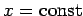
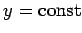
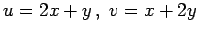
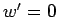

Inhalt Index DeskTop Bronstein

 Funktionentheorie Funktionen einer komplexen Veränderlichen Konforme Abbildung Begriff und Eigenschaften der konformen Abbildung
Funktionentheorie Funktionen einer komplexen Veränderlichen Konforme Abbildung Begriff und Eigenschaften der konformen Abbildung


Die Koordinatenlinien  und  der z-Ebene werden durch konforme Abbildungen in zwei orthogonale Kurvenscharen transformiert. Allgemein kann mit Hilfe der analytischen Funktionen eine Vielfalt orthogonaler Systeme krummliniger Koordinaten generiert werden. In der Umkehrung gilt, daß zu jeder konformen Abbildung ein orthogonales Kurvennetz existiert, das in ein orthogonales kartesisches Koordinatensystem abgebildet wird.
| Beispiel A |
|
Im Falle  ist die Orthogonalität gestört. |
| Beispiel B |
|
Im Falle w=z2 bleibt die Orthogonalität erhalten, ausgenommen den Punkt z = 0 wegen . Die Koordinatenlinien gehen in zwei Scharen konfokaler Parabeln über (s. Abbildung), der 1. Quadrant der z-Ebene in die obere Hälfte der w-Ebene. |